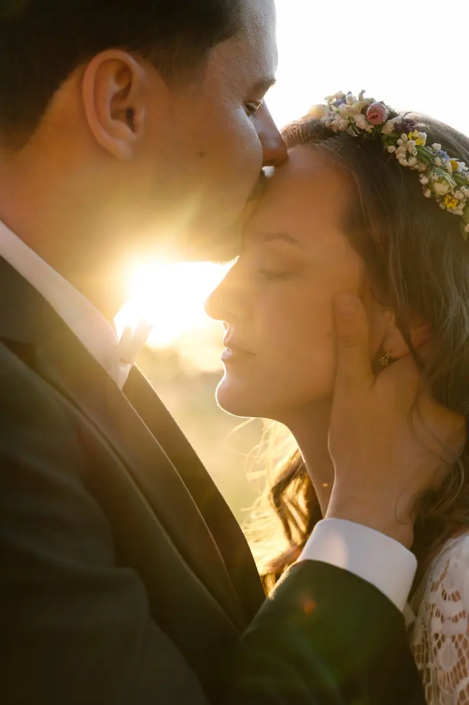
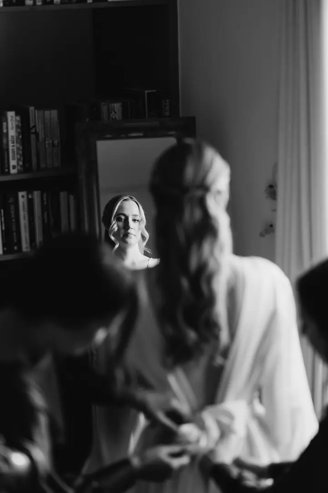
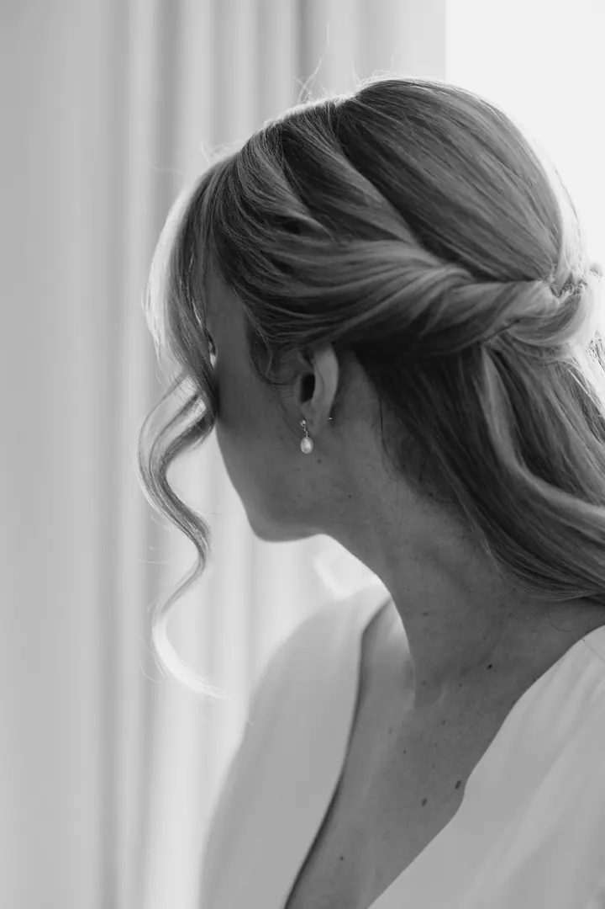

Svatební fotografie
Na svatbě nejsem jen fotografka, ale součást vašeho dne a pomocná ruka. Nenápadně fotím všechno důležité od příprav až po večerní světlo, v Olomouci i po celé republice.





Jmenuji se Jindřiška Kocourková a fotím svatby v Olomouci i po celé republice. Hlídám drobnosti z příprav, tiché chvíle mezi vámi dvěma i večerní světlo, kdy už všechno opadne.
Více o mně
„Proto si zasloužíte mít vedle sebe lidi, se kterými se budete cítit dobře.“
— Jindřiška Kocourková
Na svatbě nejsem jen fotografka, ale součást vašeho dne a pomocná ruka. Nenápadně fotím všechno důležité od příprav až po večerní světlo, v Olomouci i po celé republice.
Svatbu máte pravděpodobně jen jednou za život. Proto si myslím, že byste kolem sebe měli mít lidi, se kterými se budete cítit dobře. A to platí i pro toho, kdo vás celý den fotí.
Na svatbách nejsem jen fotografka. Jsem součást vašeho dne, pomocná ruka, když je potřeba, a člověk, který nenápadně stojí opodál a fotí všechno důležité. Nebudu vás celý den aranžovat. Ráda nechám věci plynout a jsem u toho, když se dějí.
Doma jsem v Olomouci, ale za svatbami jezdím po celé republice. Mám ráda černobílé detaily, měkké světlo u okna a zlatou hodinu na louce.
Napište mi nebo zavolejte termín a místo svatby. Hned vám dám vědět, jestli mám volno.
Probereme, jak si svůj den představujete, co je pro vás důležité a kdo k vám patří. Ať se v den svatby potkáváme jako známí.
Jsem s vámi od příprav dál, fotím nenápadně a když je potřeba, pomůžu. Na společné fotky si najdeme klidnou chvíli.
Fotky pečlivě vyberu a upravím a pošlu vám je v online galerii, ze které je můžete sdílet s rodinou.
Ano. Olomouc je můj domov, ale svatby fotím po celé republice. Stačí mi napsat, kde se budete brát.
Nebudete. Většinu dne fotím nenápadně a nechávám věci plynout. Na společné portréty si vyhradíme krátkou chvíli, ideálně v hezkém světle.
Čím dřív, tím líp, hlavně u sezónních termínů. Napište mi datum a já vám ověřím, jestli je ještě volné.
Obojí. Část fotek dostanete barevně a ty, kterým to sluší, i v černobílé verzi.